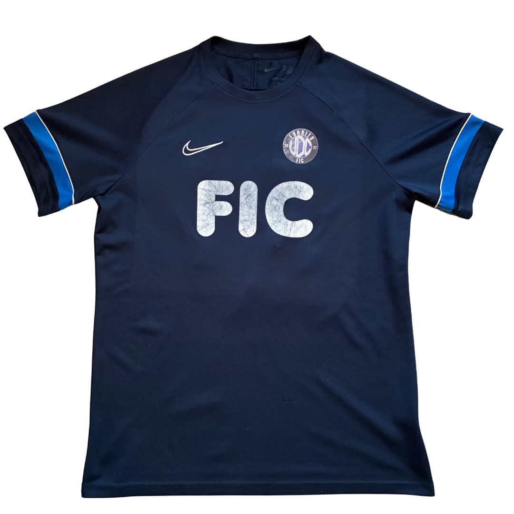
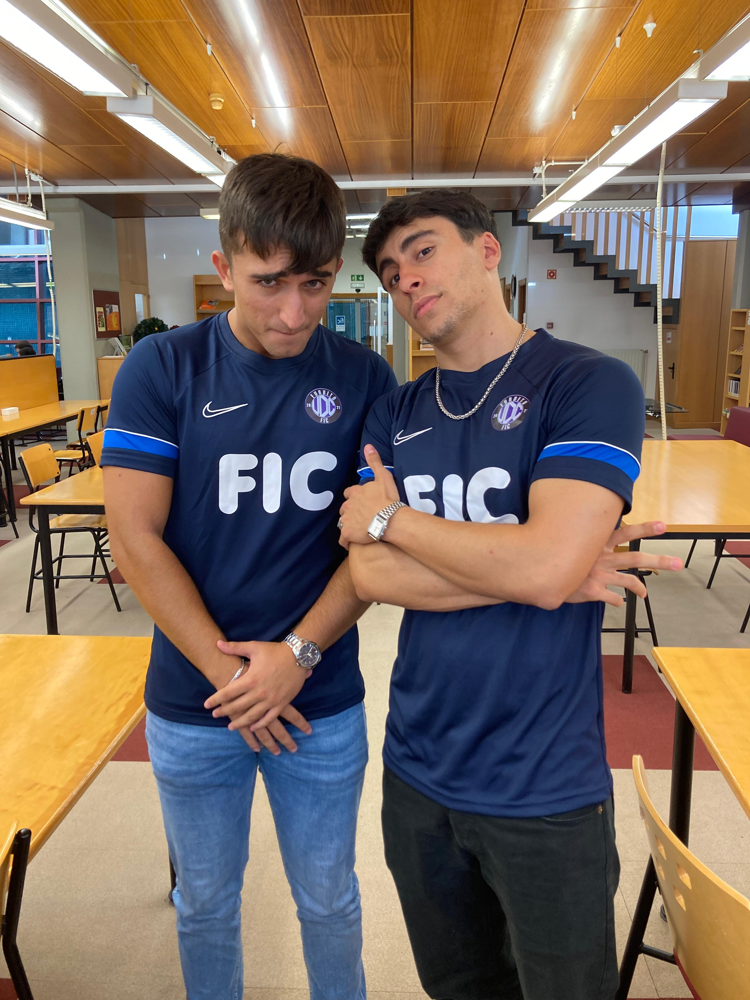
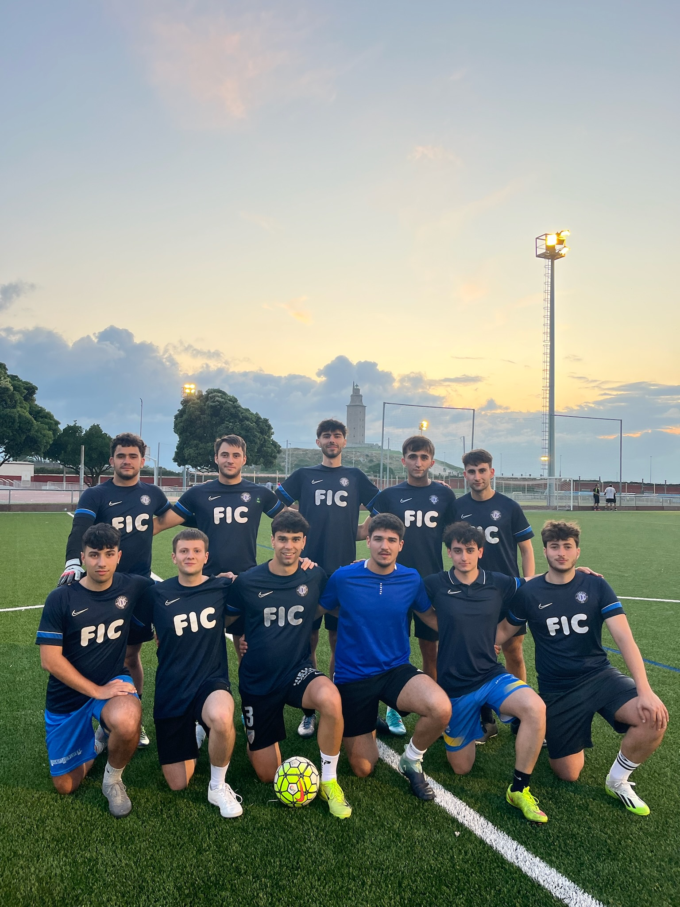
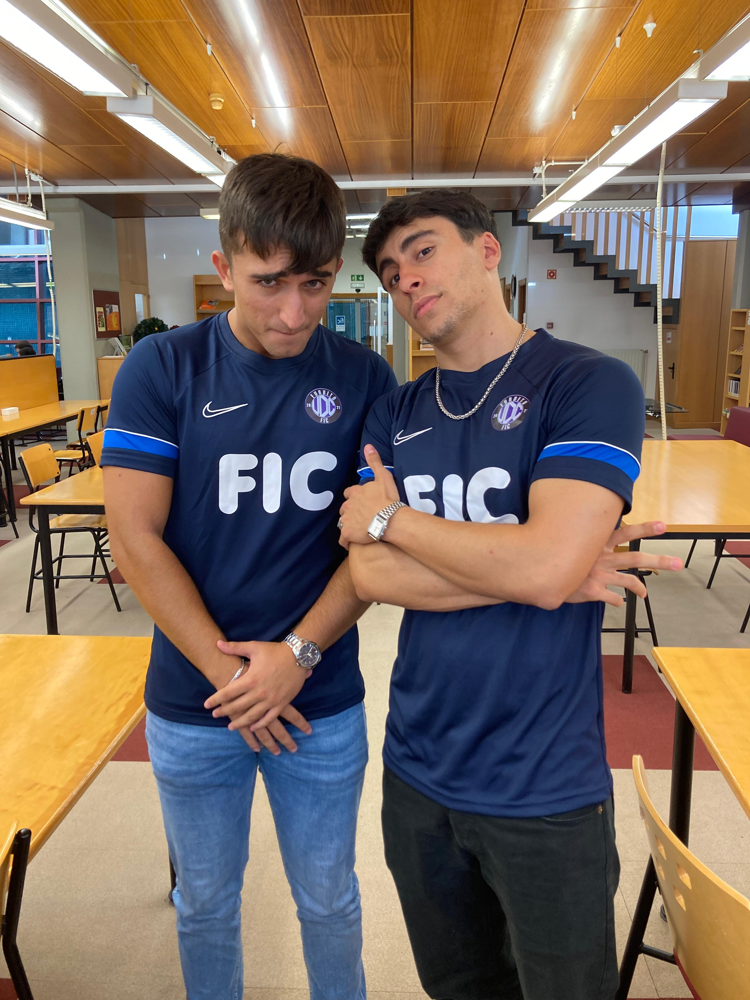
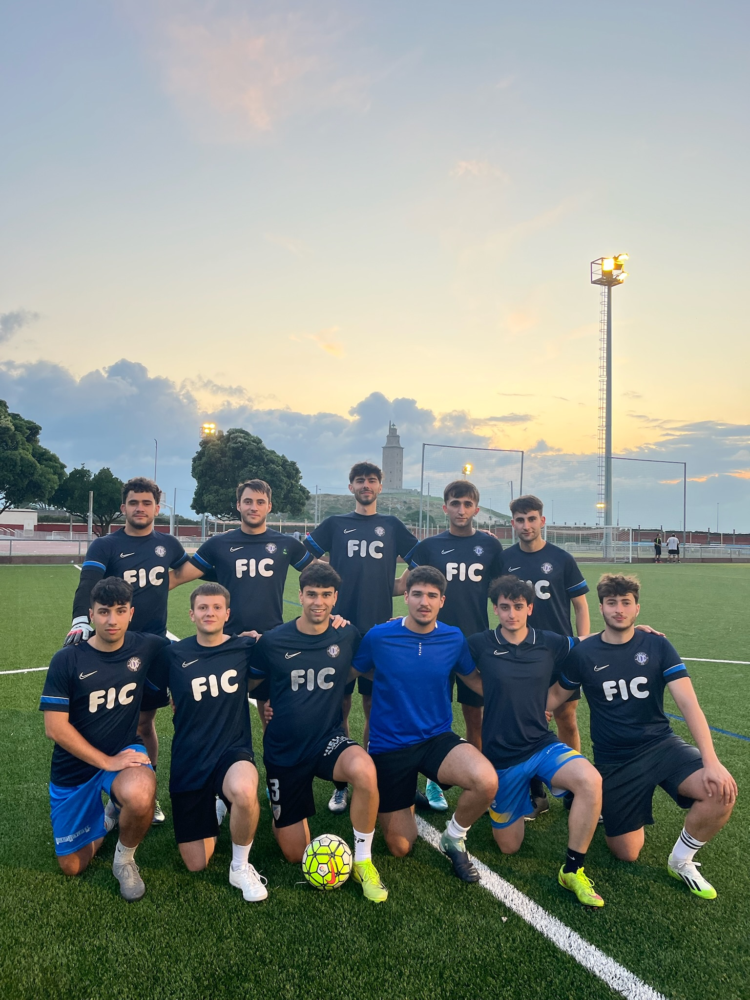

Nike x FIC (Temporada 22/23)

La camiseta con la que se consagró Furbito, no solo como equipo, sino como una familia.
El azul marino guarda las memorias del escudo original del equipo, diseñado por David Muiños en 2021, y las franjas
azules de las mangas hacen referencia a la primera camiseta que usó el conjunto informático durante su primera temporada en la Liga UDC.
Diseñada por Tillas y un amigo de Lázaro, con esta camiseta el equipo alcanzó los cuartos de final de la Liga UDC en 2024, registrando la mejor marca de su historia. Por problemas legales con la cafetería de la FIC, Furbito no pudo lucir como patrocinador el logo de la facultad, siendo sustituido por un letrero básico.
Diseñada por Tillas y un amigo de Lázaro, con esta camiseta el equipo alcanzó los cuartos de final de la Liga UDC en 2024, registrando la mejor marca de su historia. Por problemas legales con la cafetería de la FIC, Furbito no pudo lucir como patrocinador el logo de la facultad, siendo sustituido por un letrero básico.
Galería de fotos


 


